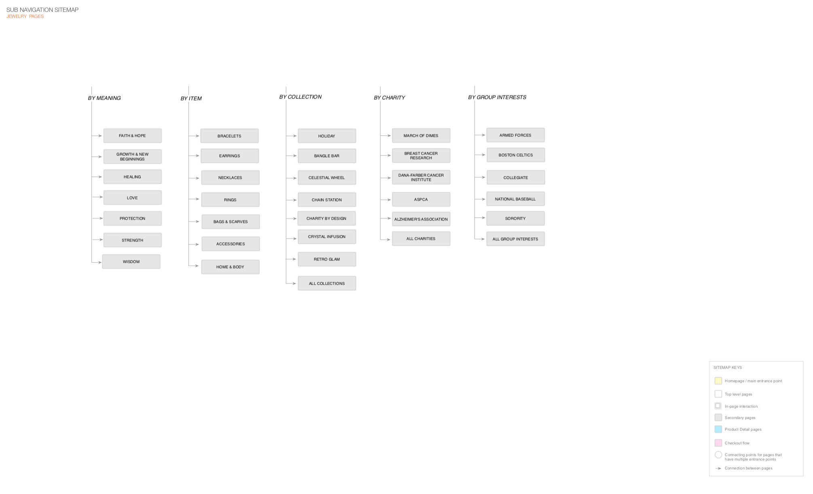
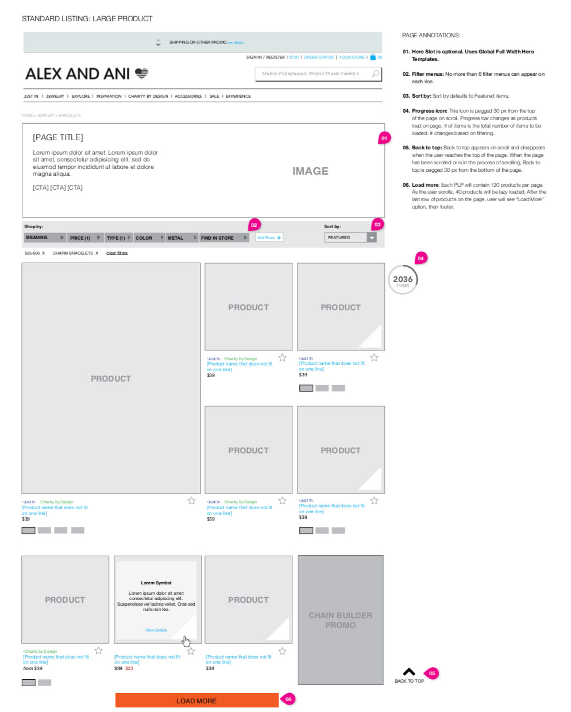
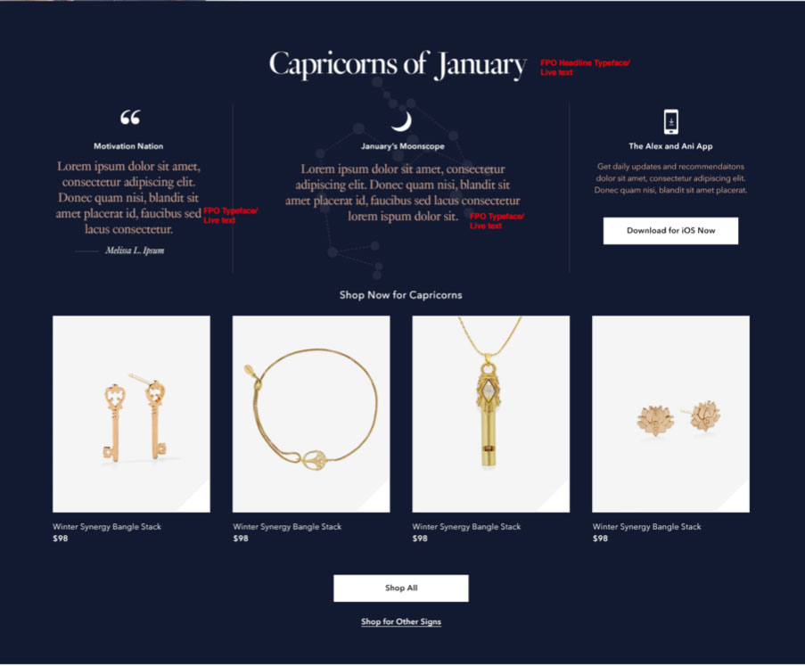
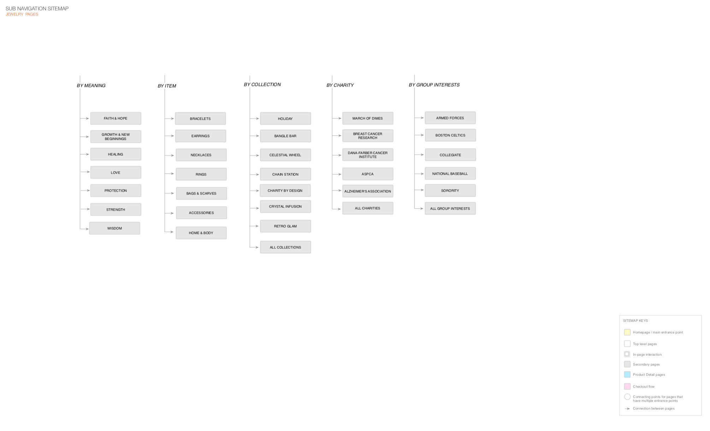
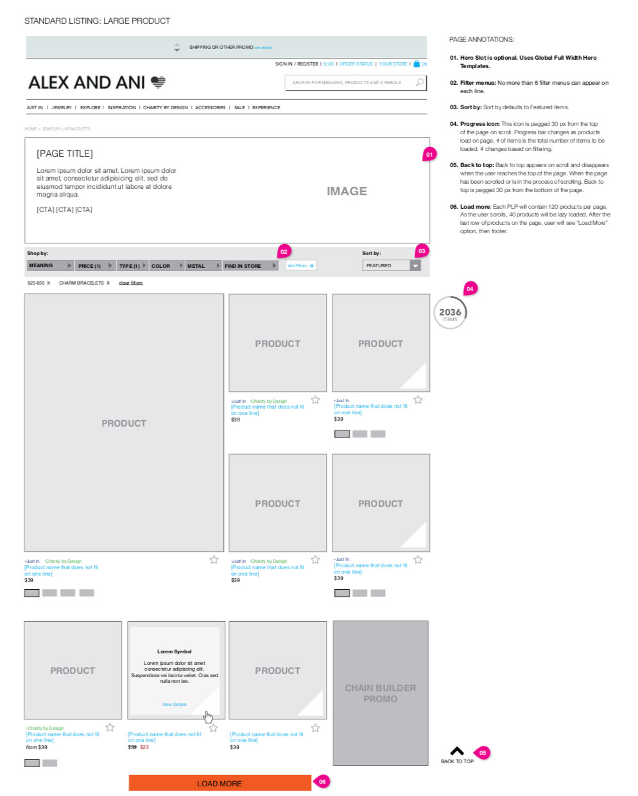
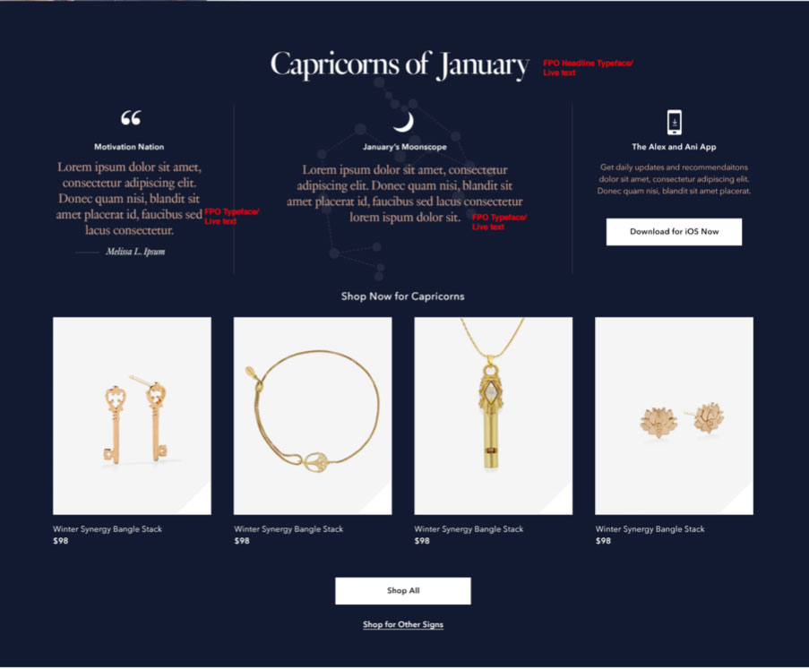
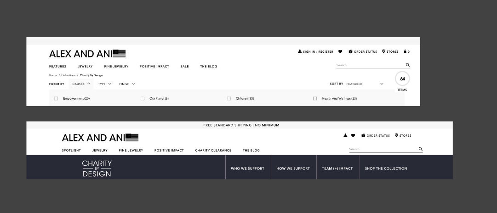
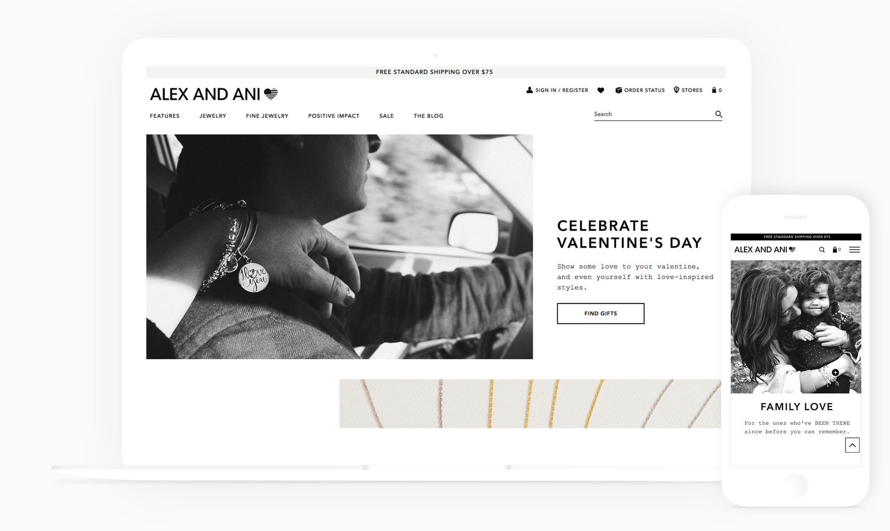

Alex and Ani
Business Goals
Connect with customers on a new level and increase AOV. Stay competitive with other similar charm companies.
Challenges
They needed to find differentiators that were long lasting and spoke to their customers.
Solutions
Personalized products based on meanings and birth stones and months. Made Charity by Design, their custom charms created to support various non-profits, a bigger focus on the site. Brought out the quality of the pieces, their care and new warranty information. Created new personalized features like Create your own chain.
Role
Directed a team of UX and design with OneRockwell, Heurisitc evaluation, Competitive landscape, Functional audit, Personas, Design workshops, Sitemaps, Wireframes
Impact
The new Charity by Design shopping experience grew revenue of this philanthropic product line from 50 million a year to 300 million within the two years following the redesign.
Research
In the beginning of the project, I collaborated with Blue Acorn, the e-commerce consulting firm. They had presented their findings to Alex + Ani. I was asked to do my own heuristic evaluation and present it to the team. I found several key areas where I felt we could get the most impact: Charity by Design (philanthropic pieces), shopping by meanings and symbols, product care and warranty.
Shopping by symbols and meaning
My job was to show Carolyn’s vision of the Alex and Ani brand. “They are unique statements that speak volumes about those who wear them. They are symbols marking individual paths of life.” I focused on shopping by meaning and symbols while giving more information on the history of the meaning or symbol. Videos were added in product images and on landing pages to increase SEO and movement on the site. I lead the content strategy for Care and warranty, the gift guide and how to wear promo/tutorials. We designed a Create your own chain/look features to allow users to create their own unique piece while purchasing more items.
 





Emphasize philanthropy
Charity by Design
When I started working with Alex + Ani, Charity by Design, where they create designs that give 20% to that particular charity, was not prominent on the site. It had raised 30 million at the time I started working with them. When the company changed management in 2018, Charity by Design had raised 500 million USD.
I made Charity by Design a distinct sub-brand, with a separate voice, tag line, logo, look and feel, blog, etc. The section was added to the main navigation and items on PLPs and PDPs had a CBD badge. The Charity by Design page had a dynamic editorial-style blog with real stories, in place of a summary about philanthropy. During checkout, we used this space to show the charities to people who have not noticed them as add-ons. Customers became philanthropists.  